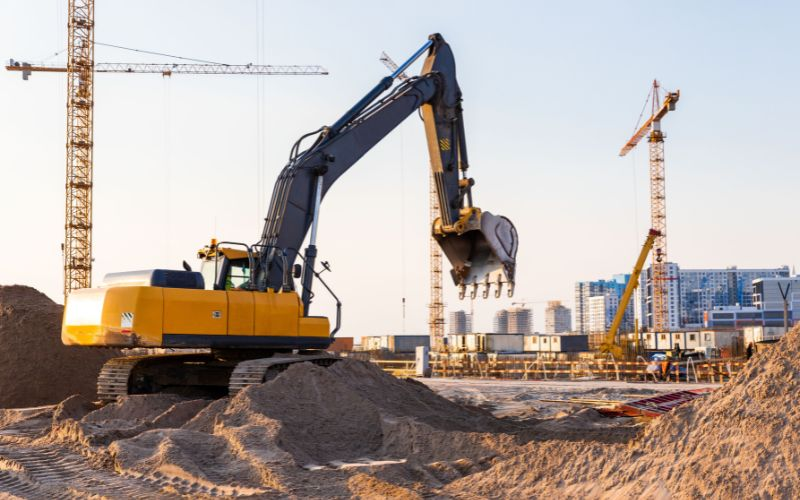
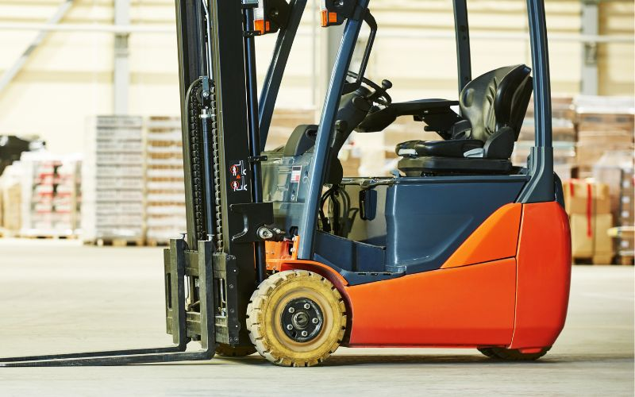
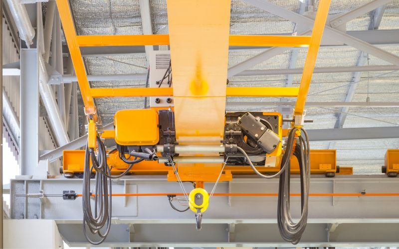
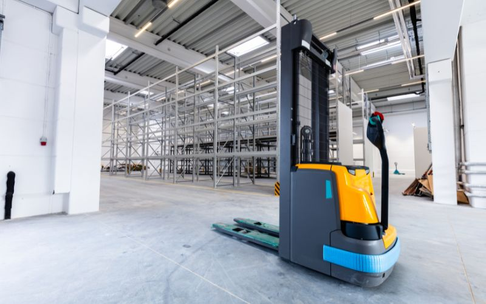
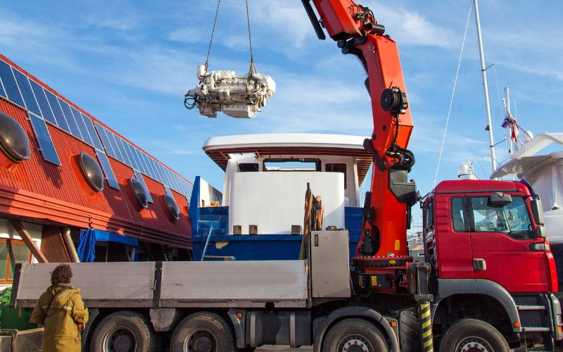

Engins de chantier
Pelles, chargeuses, engins de terrassement, compacteurs et chariots télescopiques utilisés en BTP, carrières et travaux publics.
En savoir +Accueil Conduite en sécurité et CACES®
Formez vos équipes avec des professionnels de la formation et obtenez votre CACES® : chariots, engins de chantier, nacelles, ponts roulants et grues auxiliaires.
Demander un devisChaque recommandation correspond à une famille d'engins précise. SECURIFORM vous aide à identifier la formation adaptée à votre matériel, puis prépare vos équipes à l'obtention du certificat. Les tests sont réalisés par un organisme testeur certifié CACES®, référencé sur la liste de l'INRS, en sous-traitance.

Pelles, chargeuses, engins de terrassement, compacteurs et chariots télescopiques utilisés en BTP, carrières et travaux publics.
En savoir +
Transpalettes, gerbeurs et chariots élévateurs en porte-à-faux, pour l'entrepôt, la logistique et la distribution.
En savoir +Plateformes élévatrices mobiles de personnes à élévation verticale, pour les interventions en hauteur ponctuelles.
En savoir +
Conduite des ponts roulants et portiques de levage utilisés en ateliers et environnements industriels.
En savoir +
Conduite de gerbeurs accompagnants pour la manutention en entrepôt et environnements spécialisés.
En savoir +
Grues de chargement montées sur véhicules porteurs, pour le transport routier et l'approvisionnement de chantier.
En savoir +Pour le passage d'autres CACES® (R483 grues mobiles, R487 grues à tour…), nous consulter.
Un premier repère pour identifier la formation adaptée à votre matériel. SECURIFORM affine ensuite ce choix avec vous selon vos équipements exacts.
| Type d'engin | Recommandation | Validité |
|---|---|---|
| Chariot élévateur, transpalette, gerbeur porté | R489 | 5 ans |
| Pelle, chargeuse, engin de terrassement | R482-A | 10 ans |
| Nacelle, plateforme élévatrice (PEMP) | R486-A | 10 ans |
| Pont roulant, portique | R484 | 10 ans |
| Gerbeur à conducteur accompagnant | R485 | 5 ans |
| Grue auxiliaire de chargement sur porteur | R490 | 10 ans |
Un parcours structuré, alternant théorie et pratique, jusqu'à la certification.
Réglementation, technologie de l'engin et prévention des risques, en salle de formation.
Prise en main, manœuvres progressives et mises en situation réelles sur nos terrains d'évolution.
Évaluation théorique et pratique réalisée par un organisme testeur certifié CACES®, référencé INRS.
Délivrance du CACES® en cas de réussite, valable 5 ou 10 ans selon la recommandation obtenue.
Tout dépend du type d'engin utilisé dans votre entreprise. Le tableau ci-dessus donne un premier repère ; SECURIFORM affine ensuite le choix avec vous selon le modèle exact de vos équipements et vos besoins (formation initiale ou recyclage).
Les tests sont réalisés par un organisme testeur certifié CACES®, référencé sur la liste officielle de l'INRS, en sous-traitance. SECURIFORM assure la formation théorique et pratique ; l'organisme testeur évalue et délivre le certificat en cas de réussite.
Elle varie selon la recommandation : 5 ans pour les chariots de manutention (R489) et les gerbeurs à conducteur accompagnant (R485), 10 ans pour les autres catégories (R482, R484, R486, R490). Un renouvellement anticipé, avant l'expiration, permet une formation de recyclage plus courte qu'une formation initiale complète.
Le CACES® atteste d'une aptitude à conduire en sécurité, mais il ne suffit pas à lui seul : l'employeur doit également délivrer une autorisation de conduite, propre à son entreprise, tenant compte de l'aptitude médicale du salarié et de sa connaissance des lieux de travail.
Les deux formules sont possibles. Le centre SECURIFORM dispose d'un parc matériel varié et de terrains d'évolution adaptés. La formation sur site utilise vos propres équipements et convient bien aux groupes d'au moins 4 à 6 personnes sur une même catégorie.
Complétez ce formulaire, notre équipe revient vers vous rapidement pour organiser votre session.
Afin de renforcer l'équipe SECURIFORM, nous recrutons des formateurs sur toute la France.
Notre équipe vous répond rapidement et construit avec vous la formation adaptée aux risques de votre entreprise, partout en France.
03 20 67 34 90Au-delà de la formation, SECURIFORM réalise les Vérifications Générales Périodiques de vos équipements de travail et de levage, conformément à la réglementation en vigueur.
Découvrir les VGP